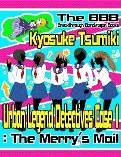

| Cast Party 2015 (Jp) (The BBB: Breakthrough Bandwagon Books) | |
| 清涼院流水 & エージェント工刀 & ターニャ | |
| The BBB: Breakthrough Bandwagon Books (2016) | |
Cast Party 2015 ( Jp )
Told by Ryusui Seiryoin, Agent Kunugi , and Tanya
Character Illustration by Kai Chamberlain and Polka D
Cover design by Tanya
C opyright © 2015 The BBB : Breakthrough Bandwagon Books
All rights reserved.
ISBN: 978-1-329-79641-6
0. About Cast Party 2015
清涼院流水（以下、流水） : このコンテンツを御覧の皆さん、あるいは、お聴きの皆さん、こんにちは。ぼくは、 The BBB 編集長の清涼院流水 （せいりょういん・りゅうすい）と申します。本日は、よろしくお願いいたします。われわれ "The BBB: Breakthrough Bandwagon Books" は 2012 年 12 月にスタートしまして、 2013 年の 1 周年と 2014 年の 2 周年の時に、それぞれ読者の方を何人かお招きして "Cast Party with YOU" 、愛称「キャスパ」というイベントを東京で開催しました。 2014 年末の「キャスパ 2014 」の時には、エージェント工刀（くぬぎ）さんにもご参加いただきましたよね。
エージェント工刀（以下、工刀） : はい。私は裏方ですので、ふだん、あまり人前に出ることはないのですが、あの時は他のキャストの方や読者の方たちと交流できて、とても有意義な時間を過ごさせていただきました。
ターニャ : わたしは、用事があって、参加できなかったけれど......
流水 : そうだね。ターニャが昨年そうだったけれど、やはり、 12 月は年末で皆さん忙しいので、その時期に集まっていただくのは申し訳ない気がしていた面もあります。それと、過去 2 回とも、残念ながら期待したほどの人数は集まっていただけなかったので、それならリアルなイベントではなく、いっそ今年の「キャスパ 2015 」は、 eBook （電子書籍）の無料コンテンツにしてしまったらいいんじゃないか、と思って実現したのが、本日のこの座談会なんです。今日は、われわれ 3 人だけで The BBB について語りますが、このコンテンツを体験してくださる読者の方たちが今まさに、われわれの周囲で聴衆として話を聴いてくださっているような光景をイメージしています。また、この座談会の英語音声は後日、 You Tube にアップする予定です 。
工刀 : なるほど、いわばバーチャル・イベントですね？了解です。
ターニャ : リアルのイベントだと参加できる方も限られているけれど、コンテンツだと日本国内の遠方とか海外に住んでらっしゃる方も体験していただけるのが良いよね。
1. About the three of us
流水 : 過去 2 回のキャスパでは、作家さんも含めて何人かの Cast （＝ The BBB 参加クリエイタ ー）にご出演 いただいたのですが、今回の座談会は少人数で濃い話をしたかったので、あえて参加者を 3 人だけに絞りました。ぼくは The BBB 編集長として、工刀さんは The BBB 校正責任者として、ターニャは The BBB チーフ・デザイナー として、参加してもらっています。本来ですと、 The BBB のシステム担当の K.G. さんにもご参加いただきたかったのですが、彼は今、英語を勉強中なんです。この座談会は英語で収録する前提だったので、 K.G. さんには、次回以降のご参加に期待しています。
ターニャ : そうだね。次回は、 K.G. さんや他のキャストの方たちも、ぜひ 。
工刀 : こんなこと言っていいのかわかりませんが、われわれはふだん、別々の場所でそれぞれの作業をしていて頻繁に会う機会はありませんから、こういうリアルの場は貴重ですね。あ、でも、皆さんにとってはバーチャルですが。
流水 : ですね。ところで、まずは簡単な自己紹介をお願いしたいのですが、工刀さん が The BBB と接点ができたきっかけも含めて、お話しいただけますか ？
工刀 : 私の場合は、まあ、英語圏でフリーランスのエージェント業のようなことをやっていまして、日本の小説界との接点はまったくなかったのですが、「神狩り博士 （かみがりはかせ） 」という謎の人物からある日突然、メールが届いたんです。そして、彼か彼女か性別すらわかりませんが、博士の「 Towerld （タワールド）」という原稿 を The BBB に持ち込むように依頼されました 。
流水 : いわゆる " 一人二役 " で、実は、工刀さんの正体が神狩り博士、ということはないんですか？ぼくは、ずっと、それを疑っているんですが......
工刀 : いやいや！私は、あんな人間離れしたカリスマではないです。神狩り博士とはメールでしか連絡が取れないので、そもそもわれわれと同じ世界に存在しているのかすら疑わしいんです。性別や年齢、国籍が不肖であるだけでなく、人間ですらない可能性もあるわけで......
ターニャ : ......という工刀さんの妄想だったら面白いのにね（笑）。
流水 : たしかに（笑）。神狩り博士という存在には、たしかにカリスマ性があり、ぼくは博士のファンでもあり関心も強いので、いつか謎が解けることを祈っています。では、続いて、ターニャが The BBB に入った経緯は ？
ターニャ : わたしは元々、コスプレイヤーで、ずっと日本のアニメやゲームが好きだから。で、カナダ人マンガ家のカイ・チェンバレンと友達で、 The BBB の前身の bbbcircle がスタートする時にカイから誘われたのが最初 。
流水 : ああ、そうだったね。ターニャは 旧 bbbcircle 時代からスタッフだったからね。工刀さんや K.G. さんは、現在の The BBB がスタートしてから加入されましたけれど。ターニャの国籍については、秘密でいいんだよね ？
ターニャ : それは複雑なので、あえて秘密でーす。
2. Talks about all The BBB Works: 2012-2015
流水 : ここから座談会の本編として、 The BBB の eBook コンテンツについて、お話ししたいと思います。参加してくださっている作家さんたち全員について、ひとことずつコメントしたいのと、シリーズ作品については、ひとまとめにして語りたいと思います。たとえば、「 Towerld 」であれば、 1 冊ずつ感想を言うのではなく、シリーズ全体として語る、ということです。
工刀 : わかりました。
流水 : The BBB は、ぼくの「 King In the Mirror 」という作品からスタートしました。この作品は、先に日本語版を紙の本で発表していたのですが、その時から英語版をつくるつもりでした。いろいろと模索していましたので、準備には 2 年くらいかかったのですが。そうして、いざ英語で出しても、最初はあまり反響がなくて。大きな反響が感じられたのは、 2014 年末に Vol.1 （上巻）を無料にしてからです。以後は毎日、世界中でダウンロードされるようになり、本当に嬉しかったです。ただ、象徴的なことに、 Vol.1 は毎日ダウンロードされ続けている一方で、有料の Vol.2 は、まだぜんぜん伸びていなくて。無料と有料のダウンロードの差が激しすぎるという The BBB が直面する問題を、見事に象徴しているわけです。この「 King In the Mirror 」については、工刀さんや他のネイティヴにも英文のクオリティをおホメいただいて、そのこともとても嬉しかったです 。
工刀 : 私がいわゆる洋楽を最初に買ったのは、日本の学年で言うところの中学 2 年で、シカゴに住んでいる時でした。その頃にラジオで洋楽を聴き始めたんですが、マイケル・ジャクソンとポール・マッカートニーが共演した「 Say Say Say 」という曲があって、あれを急に買いたくなったんです。ポールのアルバム「 Pipes of Peace 」に入っている曲なんですが、それを知らなかったので買えなくて。当時、マイケルは、ちょうど「 Thriller 」が売れまくっている頃で、実は、「 Thriller 」こそ私が生まれて初めて買ったアルバムなんです。そういった意味でマイケルには特別な思い入れがあります。
流水 : そうだったんですね。あと、「 King In the Mirror 」はターニャが表紙をデザインしてくれて、マイケルを左右反転させて、 Vol.1 と Vol.2 を並べると、実は、十字架の形になっているんです。
工刀 : ああっ、そういう仕掛けだったんですか。私は、てっきり合わせると「 H 」の文字になるのかな、と 。
流水 : 逆ですよ、逆。なんで「 H 」なんですか （笑）。
工刀 : せんぜん気づいていなかった......
流水 : そういう読者が多いと思うので、コンテンツの裏話は、どんどん入れていきたいな、と思っています。 BBB のコンテンツに関心を持っていただくためにも、です。ターニャからは、何か？
ターニャ : 元々は、カイ（・チェンバレン）が描いてくれたイラストで、４色カラーだったんですよ。でも、カイの絵は、もうちょっと写真っぽいほうが好きだったので、写真っぽくするために単色にして、光を入れて、ぼやけさせて。上下巻になるということで、反転させたらいいかな〜、と思って。そしたら、偶然、十字架っぽくなって......。
工刀 : 偶然だったんですか！（笑）
ターニャ : どうせ十字架っぽくするなら、と思って、どんどん光を強くしていって。
工刀 : たしかに、ものすごく光輝いていて、神々しいですね。さすがマイケル。
流水 : それと、ターニャにつくってもらっ た You Tube 動画 （ https://www.youtube.com/watch?v=jXXaQObNscs ）では、ドビュッシーの「月の光」という曲をターニャ自身に演奏してもらいました。クラシックでは「月の光」がいちばん好きな曲だと、マイケルが自分で言っているので、この選曲になりました。
流水 : 次に、 The BBB の第 2 弾として、 2012 年末に蘇部健一 （そぶ・けんいち） さんの「叶わぬ想い（ The Hopeless Dream ）」という作品を出しました。また、蘇部さんは、 2014 年 3 月に「きみがくれたメロディ（ Your Melody ）」という作品も刊行させていただきました。
工刀 : 「叶わぬ想い」は、最初読んだ時に、スマホで読んでいたので画面が小さくて、最後のオチの部分で挿絵がよく見えなかったんです。あれは、挿絵が見えて初めて真相がわかりますよね。だから意味がわからなくて、「え？え？」と、とまどったことを、よくおぼえています。
流水 : 蘇部さんの作風は大きく分けると２パターンあって、ひとつは、いわゆるミステリーで、読者を驚かせるタイプのものです。彼独自のスタイルとして、世界でも唯一無二ですが、最後のイラスト１枚で驚かせる作品が多くあります。言うなれば、ヴィジュアル・トリックです。
工刀 : 絵とトリックを絶妙に融合させていらっしゃいますよね。
流水 : 「叶わぬ想い」もそうで、最後の絵を見ないと真相がわからなくて。見ても、意外すぎて、すぐには理解できないくらいの意外さで。だからぼくは、この機会に、「これは本当に意外な真相のミステリーなんですよ！」という事実を声に大にして訴えたいんです。そうアナウンスしないと、海外のミステリーでも、ここまで意外すぎる作品はたぶんないので、理解できないまま読み終えてしまうんですよ。それは、もったいなくて。
工刀 : 私も実際、スマホで見た時には、わかりませんでしたから。
流水 : そう、だからこの座談会の後、未読の方には、ぜひ読んでいただきたいんです。あの驚きを体験して欲しい。一生に 1 度でも味わえたら幸せ、というクラスの驚きですから。で、もし最後の意味がわからなかった場合は、絵をよく見て、絵の意味がわかるまで考えてください、ということです。なんなら、 The BBB に質問メールを送ってくださっても構いませんので。「叶わぬ想い」は、数ある蘇部作品の中でも、いちばん驚く傑作中の傑作なんです。もうひとつ、蘇部さんの作品には感動系という方向性があるのですが、その代表作が「きみがくれたメロディ」です。
ターニャ : 「きみがくれたメロディ」は、 The BBB 初の無料作品でもあるよね 。
流水 : そう。 2 年前の「キャスパ 2013 」の時に、蘇部さんが無料での刊行をご提案くださって、そのおかげで、以後の無料作品も続くことができました。 The BBB としても転換点となった重要な作品です 。
工刀 : この作品は、ネイティヴも好意的 な Amazon レビューをつけてくれていましたね 。
流水 : あれは嬉しかったですね。工刀さんも校正で参加してくださったのですが、印象的だったのは、作中で出てくるメジャーリーグの試合がたまたま工刀さんが非常に愛着のあった試合だから、蘇部さんのご許可を得て、試合の描写を加筆されていましたよね。工刀さんが（笑）。
工刀 : 蘇部さんは、本当に、おやさしい方だと思いましたし、感動しました。作家さんによっては、あのような加筆のご提案をしたら、殴られていたかもしれない......
流水 : 蘇部さんは英文科を出られていますし、メジャーリーグがお好きだったり、洋画がお好きだったり、とか。 The BBB に参加していただくべき方だったと思っています。そもそも、ぼくは最初、 The BBB では自分の作品だけ発表するつもりだったんです。でも、メフィスト賞受賞作家さんたちの集まりで蘇部さんが「私もやりたいです」と言ってくださったおかげで、複数の作家さんたちが加入してくださることになって。だから、蘇部さんは間違いなく最重要人物のおひとりです。ぼくは、蘇部さんの作品をどんどん刊行したいのですが、蘇部さんは「今の 2 作が売れるまで出さなくていいです」と、おっしゃっていて......
工刀 : えー、でも、次を出さないと売れないでしょう !?
流水 : ですよね。蘇部さんは、やさしすぎるんですよね。なので、蘇部作品をまた英語で読まれたい方は、今までの 2 作を、できるだけお求めいただきたいです。ターニャは、蘇部作品の表紙について、何かある？なんで表紙の背景は白くしたの？
ターニャ : 「叶わぬ想い」では、わたしは最初、背景を入れていたんだけど、流水が変だって言うから。「きみがくれたメロディ」の時も、最初、額縁は要らないって言われて......
流水 : そうかそうか。たしかに、最初、額縁ありのバージョンが変だと思って、取ってもらったら余計に変で、額縁を戻してもらったんだったね。
ターニャ : わたしは、「叶わぬ想い」は、今でも没になった最初の表紙が好き。
流水 : You Tube の動画 （ https://www.youtube.com/watch?v=6-xzY-T8lKU ）が、あの最初の表紙と同じ背景だから、読者の皆さんには、ぜひ御覧いただいて、ご判断を仰ぎたいね。
ターニャ : あと、あ の You Tube 動画には、柴犬モモの声が入っています。毎回、ピアノの生演奏を録音しているんですけど、実は、横にモモがいるんです 。
流水 : この動画の 2 分 29 秒のところでモモが吠えますので、ぜひご確認ください。
ターニャ : 私は弾いていることに集中していたので、モモの声に気づかなくて。
流水 : ぼくが聴いて気づいて、面白いので、そのまま残したんです。
工刀 : それは、残したほうがいいですよ。モモ氏は、 The BBB のベストセラー作家ですからね ！
ターニャ : 矢野さんの動画の時も、同じようなことがあったよね。
流水 : じゃあ、流れ良く、次のコンテンツの話に。
流水 : 矢野龍王 （やの・りゅうおう） さん が The BBB で「龍王の不思議なブログ」というシリーズを 2 作出してくださっているんです。その 1 作めの「泥鰌（どじょう /The Loach ）」 の You Tube 動画 （ https://www.youtube.com/watch?v=JImvFLD2BWg ）にも、面白いところがあります。「叶わぬ想い」の時はモモのキャンという鳴き声でしたが、今回は 0 分 48 秒のあたりに、モモがぴちゃぴちゃと水を飲む音が入ってしまっているんです。ターニャがピアノを弾いている横でモモが水を飲んでいて。
ターニャ : しかも、泥鰌の写真がアップになる場面のあたりで、ピチャピチャって。
工刀 : タイミングも、バッチリあってたんですね（笑）。効果音のようだ......さすが、モモ氏......人気作家は「持って」いますね。
流水 : 矢野さんのシリーズの特色としては、矢野さんがマルチにこなされている点です。最初から英語で書かれていて。デザインはターニャなんですが、表紙絵も矢野さんがご自分で描かれていて。これは The BBB でも唯一の、ユニークなケースです 。
工刀 : ご自身で絵まで描かれるというのは、素晴らしいですね。
流水 : この表紙デザインは、どういうねらいで？
ターニャ : 矢野さんの作品はブログ形式でというお話だったので、じゃあ、レトロな書物がいいかなーと思って、こういう感じにしたんだよね。矢野さんのイラストが現代的なデジタルっぽいものだったので、これにデジタルな背景をつけると絵が薄まっちゃうと思って、あえて、古びた書物っぽいデザインにしたんです。ラテン語の聖書とかに出てきそうなイメージで。わざと色褪せさせて。
流水 : 「泥鰌」はミステリー的にも非常に素晴らしくて、ストーリーは矢野さんが泥鰌を飼っていたというお話なんですが、実は、ミステリー的にすごい仕掛けがあって。工刀さんも最初に読んだ時に、「ミステリーとして、本当に良い作品だと思いました！」と、おっしゃっていましたよ ね。なので、ネイティヴにも今後、もっと読んでいただきたいですよ 。
工刀 : そんなこともありましたね、そう言えば。あれは本当に驚いたんです。なつかしいです。
流水 : で、 2 作めは「肝炎（ Hepatitis ）」です。どこまで実話か知らないですが、矢野さんが本当に肝炎になられたのかな、と思わされる内容で、これも結末は衝撃的です。ここまで書いちゃっていいの？と、矢野さんのことが心配になったほどで（笑）。工刀さんは、この作品から校正責任者として参加してくださったわけですが、思い入れはありますか？
工刀 : 専門用語が次から次へと出てきて、アルファベット 3 文字とかの医学的な用語の検証が、けっこう大変でしたね。その確認作業には、ずいぶん時間をかけました。でも、まあ、いちばん時間をかけたのは、ラヴホテルを英語でどう直したらいいかな、ということでしたね（笑）。
流水 : たしかに（笑）。ラヴホテルという概念は、アジアにしかないですからね。
ターニャ : あ、そうなんだね。知らなかった。
流水 : 矢野さんのこのシリーズも、できればどんどん続けたいんですが、矢野さんがかなりお忙しくなってしまって、しばらくお休みとなっています。
工刀 : せっかくのシリーズものですから、続きは読みたいですよね。続きが出たほうが、読者にも知られやすくなるでしょうし。
流水 : 次は、秋月涼介 （あきづき・りょうすけ） さんの「 The Gifted （ザ・ギフティッド）」シリーズです。作者の秋月さんは、ぼくの英語学習仲間でもあって、彼は、なんと言っても、こつこつ書き続けてくださっている点が素晴らしいです。神狩り博士と秋月さんは、とにかく書き続けてくださるので。
工刀 : まずは、そこからですよね。......って、私はただのエージェントなので、偉そうなことは言えませんが（笑）。たしかに、博士は、次から次へと書いてきます。
流水 : ええ。どんどん書いてくださっているので、そこが本当にありがたいし、もちろん、ストーリー的にも面白いですし。あと、表紙絵の佐久間真人 （さくま・まこと） さんも、すごく才能のある絵描きさんで。佐久間さんは世界でも通用する画家だと、ぼくは信じていますから、参加していただけて光栄ですし、本当に嬉しく思っています。
工刀 : たしかに、佐久間さんの絵は、毎回作風が変わっていて、 Vol.4 の表紙を見た時には、この方の頭の中はどうなっているんだろう、と思いました。よくこの発想に辿りつけたなと。
流水 : 「 The Gifted 」シリーズのきっかけをお話しすると、秋月さんが「ジョジョの奇妙な冒険」を大好きで、彼があまりにもジョジョ好きなので、じゃあ、せっかくなのでジョジョ的なことをやりませんか、ということで始めていただいたのが、この「 The Gifted 」なんです。だから実は、秋月さん版ジョジョなんです、これは 。
工刀 : あの、すみません。私、実はジョジョは読んだことないんですが、まずいですか......？
流水 : まずくはないですよ（笑）。
ターニャ : でも、第 3 期までは読んだほうが良いかも。名作だから。
工刀 : 「北斗の拳」だと、どこまで読んだほうがいい、とかあるじゃないですか。
ターニャ : 第 1 部のラストまででいいんじゃない？
工刀 : ラオウが死ぬまで？
流水 : いや、あの後も要るよ。やっぱ、修羅の国は要るでしょう。
工刀 : 個人的には、ファルコまでですかね。修羅の国は別の時代、未来の世代、異なる登場人物等の設定を使った独立した作品として売り出すべきだと思うのです。
流水 : それはそれとして（笑）。工刀さん的には、「 The Gifted 」シリーズについて、なにか思い入れはありますか？佐久間さんの絵については伺いましたが、 Vol.2 から校正でも参加していただいていますし。
工刀 : ジョジョと通じる点かもしれませんが、キャラクターたちが特殊能力の持ち主ということで、これは世界観をきちんと構築するのが難しそう、という印象は受けています。「 Towerld 」は特殊能力も超能力もないですよね。あの塔世界の住人達は、人類の失敗作っぽいし。どちらがつくりやすいかは、人によって違うかもしれません。神狩り博士が何を考えているかは私も知りませんが、特殊能力のない登場人物がどこまでできるのか、を試しているような印象は受けています。
流水 : それは、両方の方向性があっていいと思いますよ。どらちも間違いではなく、めざす道は違っていてもいいと思うんですよ。
工刀 : たしかに、どちらも正しいと思います。
流水 : ちなみに、秋月さんは、「 The Gifted 」シリーズのスピンオフ企画として、グルメ・リポート「 The Sifted （ザ・シフティッド）」シリーズも進めてくださっています。こちらも、ぜひよろしくお願いいたします。
流水 : 次は、「 Samurai Purchasing 」です。これはぼくの友人の坂口孝則 （さかぐち・たかのり） さんという方が、お仲間のバイヤーさん 6 人と組んで、昔、一度刊行したものなんです。ガチのビジネス書です。
工刀 : ほんとガチですよね。
流水 : 分量的にも、今まででいちばん多いんです。上下巻に分けても、まだ長すぎるくらいで。
工刀 : 私の中では、積木さんの「くねくね（都市伝説刑事 事件３）」が、ものすごく長かった印象が......
流水 : そう、１冊ではあれが最長なんですが、上下巻を足すと、この「 Samurai Purchasing 」が最長で、これは作業が本当に大変でした。当時は工刀さんの助けもなかったですし。また、この作品から、イラストの竹内麻喜 （たけうち・まき） さんが参加してくださって。竹内さんという人は、とても個性的で印象的な絵を描かれる方だな、と以前から思っていまして、個人的にも、とても好きな絵です。
ターニャ : わたしも好き！
工刀 : たしかに、独特の雰囲気がありますよね。

流水 : 次は、積木鏡介 （つみき・きょうすけ） さんの「都市伝説刑事」シリーズですね 。秋月さんも都市伝説をお好きなんですが、積木さんとぼく は昔からよく都 市伝説の話をさせていただいていたんです。都市伝説を題材にしたぼく の本に、積木さんに解説を書い ていただいたこともあります。この「都市伝説刑事」シリーズは、ぼく が積木さんにまさに書いていただきたかった話ですし、シリーズが完結したあかつきには、積木さんの生涯を代表する大傑作になることを確信しています。
工刀 : 積木さんと編集長は昔から、都市伝説のつながりがあったんですね。このシリーズの表紙も、竹内麻喜さんですね。
流水 : 最初の作品「メリーさん」だけターニャがデザインしてくれたんですが、「ひとりかくれんぼ」と「くねくね」については、竹内さんにデザインまでお任せしました。
工刀 : 竹内さんは、さまざまなご活動をされているようで、多才な方なのですね。
流水 : そうですね。才能のある方たちが集まって来てくださって、いつも本当に感謝しています。積木さんは特に、 The BBB のスタート時点から現在も、ものすごく本気で取り組んでくださっているので、頭が上がりません。少しずつ刊行の間隔は空いていましたが、先日、「都市伝説刑事 事件 4: 鮫島 （さめじま） 事件」も無事に完成されて、これも期待以上の、まさしく圧倒的な面白さでした。 2016 年 3 月から 5 月のあいだには刊行させていただきたい、と思っています。
ターニャ : それは楽しみ。
工刀 : 私も楽しみです！が、あの......ぶっ、分量的には......どのくらいぃぃ？でしょうか？
流水 : 積木さんは筆力があって、つい書きすぎちゃうんですね。ぼくと工刀さんは、「くねくね」では地獄を見ましたからね。あれは長すぎて、他の作品の 5 倍くらいの分量でしたからね。ぼくらも時間に追われてノイローゼになるほどで。あれはやばかった......。「鮫島事件」は気持ち短めにしていただいたので、あそこまでは長くないです。
工刀 : 長くて密度が濃いのは、いいんですけどね。長くなるのであれば、分けてやったほうが......
流水 : そう、長い場合は、「 Samurai Purchasing 」のように分割したほうが良いですよね。英訳や校正のクオリティ的にも。最初の「メリーさん」から既に長かったので上下巻で出したんですが、やっぱり上下巻は売れにくいだろうということになって。積木さんにもご了解いただいて、「ひとりかくれんぼ」の時に「メリーさん」の合本も同時に出して。どちらも長めだったのですが、「くねくね」は、もっと長くなったという......。
工刀 : 「ひとりかくれんぼ」も長かったですが、「くねくね」ほどではなかったですね。
流水 : 「くねくね」は、われわれが 1 か月で品質を落とさずに英訳、あるいは校正できる英文の量を、はるかに超えていましたよね。あの時は、ぼくも工刀さんも、発狂寸前まで追いつめられていましたからね。それこそ、「積木さんワールド、恐るべし！」です。英訳者や校正者を狂わせるほどの魔力があるわけで（笑）。
ターニャ : え、そこまで......なの？
工刀 : 今後は上下巻に分けたほうがいいですね。
流水 : 間違いないです。ただ、そう言ってから積木さんの執筆が止まってしまっていたので、申し訳なく思っていました。ストッパーをかけちゃったかなと。積木さんの中で全 6 作の構想は最初からあるので、今後も楽しみです。
工刀 : 作中に出てくる「白い友達」が黒装束で、「黒い友達」が白装束で、あれは混乱しますよね。
流水 : それは、作者の積木さんも混乱されていましたからね（笑）。
工刀 : コラー！（笑）あれは、男か女かは......英語版で は he と訳されていましたが 。
流水 : 積木さんに確認したところ、女ではない、ということは、おっしゃっていましたので。
工刀 : 女ではないんですか？その線があるかと思ったんですが。
流水 : 英語 は he と she があるので、性別トリックというのは、やりにくいですよね 。
工刀 : 逆に言えば、そこは日本のミステリーだけの強みかもしれないですね。ミステリーに限らず、日本語で書かれた小説全般に言えると思いますが。
流水 : 次は、覆面作家・シロさんの「 Shinobi : Real 01 」という作品です。この方は、実は日本の人気作家なんですが......
工刀 : 私も知ってる方ですか？
流水 : 工刀さんも知ってるはずですが、正体を隠したがっていますので、工刀さんにすら明かせないんです。
工刀 : この私にも言えないなんて......ターニャさんは、知ってますか？
ターニャ : 知ってますよぉ。
工刀 : あ、知ってる？じゃあ、教えてくれないかなー。
流水 : いや、これは工刀さんにさえ、まだ言えないです。 K.G. さんも知りませんから 。
ターニャ : そ。ナイショー（笑）。
流水 : これも面白い作品で、ネイティヴからファンレターが来て「続きが読みたい」と催促されているんですが、シロさんも、元々お忙しいのもありますが、もっと売れないとこのシリーズに時間を割けない、という面があって、結局、皆さん、そこで止まってしまうんですね。
工刀 : あ、正体わかった！絶対わかった！
流水 : まあ、秘密ですけど（笑）。いずれにしても、この 1 作めが人気が出ないと、続きを書いてもらえないと思います。ですから、続きを読まれたい方は、ぜひ周囲に広めてください。そうしないと、続きが出ません。これは本当の話です。著者のシロさんは、ニーズさえあれば、たちまち何作でも書ける筆力をお持ちの方ですから。
工刀 : では私は、神狩り博士を突ついて、売れようが売れまいが書かせるしかないですね。
流水 : 神狩り博士と秋月さんは、本当にありがたい存在です。常に書き続けてくださっていますから。やはり、そういう方がいないと、 The BBB そのものを続けられませんからね。それと、ちなみに 、「 Shinobi : Real 01 」は、イラストの清水鳥哥（しみず・とりか）さんと竹内麻喜さんがお友達という御縁から、竹内さんが、とてもセンスのい い You Tube 動画 （ https://www.youtube.com/watch?v=wXNPxGE87Jc ）をつくってくださいました。このままアニメ化して欲しいクオリティです。ぜひ御覧ください。
工刀 : 竹内さんも万能で謎の存在ですね。博士と言い、謎が多い集団です......

流水 : 次は、早川洋平 （はやかわ・ようへい） さんのインタビューです。この作品から、 "The BBB インタビュ ー・セレクション " という企画を始めたんです。その第 1 弾として、プロインタビュアーである早川さんを、逆にインタビューさせていただきました。早川さんとは昔から非常に親しくしているのですが、彼は、本当に世界を代表するインタビュアーを真剣に目ざされていて、実際、世界中を飛び回るコスモポリタンとして、ご活躍されています。先日も工刀さんに相談したように、実は、「プロインタビュアー」という概念は英語にはなくて理解されないので、早川さんは最近、「メディア・ジャーナリスト」と名乗っているんです。それも踏まえて、早川さんインタビューは、セカンド・エディションを刊行し直しました。
工刀 : インタビュアーですと、面接官になっちゃいますからね。
流水 : この "The BBB インタビュ ー・セレクション " は、反響があれば、インタビューしたい面白い方が周囲に何人もいるんですが、今まではそんなに反響がなかったので、休止していました。
ターニャ : でも、無料にしてからは、反応が急に良くなったよね。
工刀 : ううむ、やはり無料は強いな......
流水 : 著者の方たちのご賛同が得られて無料化した後は、 "The BBB インタビュ ー・セレクション " は、実際、どれも小説よりダウンロードされています。
工刀 : 小説、もっとがんばって欲しい......
流水 : それと、早川さんについては、彼が以前から取り組まれている「戦争の記憶」という戦争体験者へのインタビュー・シリーズがありまして、これを 2015 年 7 月から The BBB でも無料作品として刊行させていただいています 。
工刀 : 「戦争の記憶」を遺すのは、とても価値のある活動だと思います。
ターニャ : わたしも大賛成。
流水 : では、次。いよいよ「 Towerld 」シリーズです。神狩り博士という著者の登場は極めて意味が大きかったと、ぼくは思っています。今や、 The BBB で著作数最多の著者ですし 。
工刀 : 最多、というのは、売れてる、という意味ですかー？（笑）
流水 : とりあえず、作品数は多いですよね（笑）。でも本当に、このシリーズ が The BBB のひとつの支柱をなす、中心的存在だと思っています 。
工刀 : 売り上げも中心になれるといいんですが......エージェントとしては、やはりそこが気になります。
流水 : そうなって欲しいと思っていますし、博士から強いご要望があったということで 3 作めまで無料にしましたので、有料の 4 作め以降にも、ぜひご関心を持っていただきたいです。 3 作めまでで主登場人物が揃いますからね。 1 冊めだけだと、主人公しかいないようなものなので、その段階で挫折して欲しくないです。
工刀 : 1 巻だけだと、野郎しか出てこないし。やっぱ、野郎だけだとダメでしょうか。博士いわく、「とりあえず紋切り型の女性キャラを出せば OK 」という風潮に反抗したかったみたいなんですね。本物の作品は、そういう萌えキャラがいなくても成立すると博士は信じていて、そういう硬派な作品にしたようです。今となっては、だいぶ作風が違う気もしますが。
流水 : いや、そんなことはないですよ。一貫した姿勢は感じます。
工刀 : でも、どうですか。 1 巻の作風のままですと、巻が続いても売るのは難しいですかね？
流水 : そんなことはないと思っていて、ぼくはニーズはあると信じているんです。ただ、「 Towerld 」に限らず、読めば喜んでくださるであろう層にまで届けるのが難しいな、とは思っていて。 eBook は氾濫していますからね。誰でも簡単に本が出せる時代ですから、みんなが作家になれてしまうんです。電子書店は特に、リアル書店以上にコンテンツの洪水で、その中でどう自己主張するか、という......。
工刀 : やっぱり、他との違いは欲しいですよね。
流水 : たぶん、ただ傑作を書くだけでは、もはや通じない時代なんです。もっとプラスアルファの話題性とかがないと、通用させるのは難しい。これは、他の作品も含めてですけど。 The BBB 全体の課題として、皆さん、面白い作品は既に書いてくださっているんです。でも、それだけでは広い層にまで届かないんです。 The BBB も、無料作品に関しては、最近ずいぶん広く読まれるようになってきましたが、有料までは、まだなかなか読んでもらえないんですね。無料の eBook が世の中には非常に多いので、じゃあ、無料のやつだけ読めばいいじゃないか、という読者の心理も理解できます。いかに、有料でも買っていただける魅力を出していくか、です。キャスパでは毎年この話題になるんですが（笑）。
工刀 : やっぱ、そこですよね。
ターニャ : 読者の方のご意見も聞いてみたいね。ご意見のある方は、ぜ ひ The BBB サイトのお問い合わせフォーム （ http://thebbb.net/jp/contact/ ）からお知らせください。
流水 : 「 Towerld 」は、ぼくは本当に大好きなシリーズで、人生で読んだすべての小説の中でいちばん好きなシリーズになりつつあるかも ......とすら思い始めています。なので、もっと人気になって欲しいんです。博士に書き続けていただくためにも。
工刀 : 「 Towerld Level 0008 」は、女性が出てこないし、登場人物は身体障害者ばかり、という思い切った内容なのですが、こうした方向性はリスクがありますかね？
流水 : 見せ方次第でしょう。
ターニャ : むしろ、良いと思います。バリアフリーは大切なことだもん。
工刀 : 「 Towerld Level 0009 」では、女性キャラが 5 人出てくるんですけどね。
流水 : ぼくはネイティヴの感覚はわからないのですが、工刀さん的に、「 Towerld 」の世界観は、ネイティヴにどのくらい届くと思いますか？と言うのも、 The BBB のすべてのコンテンツについて言える話として、何がネイティヴに届くかは、結局、わからないわけです。日本の出版界自体、欧米に受けた前例がほとんどないので。成功例が皆無に近いから、博士ご自身、あるいは工刀さんとしては、どの程度まで「 Towerld 」には勝算があるのかな、というのは気になっていました。ぼく自身は、もちろん面白いと思っていますが、ネイティヴ的には、どうなんだろう、という点で気になっています。
ターニャ : わたしは女子なので、女の子をたくさん出して欲しい......。むしろ男が要らない。
流水 : でも、女子でも男子ばっかりの世界を読みたい人もいるよね？
ターニャ : それは、男子だけの世界ならいいよ。わたしはゲイが好きなので。
流水 : その意見、あんまり参考にならないかな？（笑）
ターニャ : ゲイじゃなくて、ふつうの世界なら、女子が多いほうがいい。
工刀 : Level 0008 以前は女性キャラがふたりしか登場しないので、たしかに、野郎、男、そして野郎ばかりですね。
流水 : ただ、ターニャは、ちょっと特殊な性癖なので（笑）、一般読者とは言えないかもしれない。
ターニャ : あと、モモみたいな動物が欲しい！
流水 : ああ、動物ね。一応、犬はいますよね。麻薬王の番犬が。
ターニャ : 鳥とか、ウォンバットとか、フクロウとか、なんでもいいんですけど。旅路の道案内をするとか。
工刀 : そうすると、人間の言葉を話す動物？
ターニャ : カラスでもなんでもいいですけど。
工刀 : そうすると、ディズニーのマジカルキングダム的で、「 Towerld 」とは違ってくると思うんです 。
ターニャ : わたしはディズニー・ファンなので、そこの趣味は真逆ですね。
流水 : ちなみに、工刀さんとターニャは、 Marvel のコミック とプロレス好きという点では共通しているよね。
ターニャ : でも、わたしは、 WWE は、ディーバがいなければハマらなかった。わたしは、ディーバが好きなので 。
工刀 : あー、そこが違う。私は、ディーバが出てくると、チャンネル替えるんですよ。あれ程に美しい人達であれば、リング以外の設定や場所で堪能したいので。
流水 : ふーん、それはだいぶ違うな。まさに真逆？
ターニャ : Marvel では、わたしは、サイロックが好きだったんです 。
工刀 : サイロック派だったんだ......。え、フェニックスじゃなくて？
ターニャ : じゃなくて。サイロック。だけど、ミュータント・タートルズとかもすごい好きだった、みたいな。
工刀 : 何ですか、それは？ここで動物つながり？
ターニャ : まあ、「 Towerld 」は今までも牛の頭とか豚の頭とかは出てきてるから ー。
流水 : あれはマスクなので、動物じゃないし。あ、今後、動物のフロアを出すとか？
ターニャ : 鹿でもいいよ。バンビとか。
工刀 : 人間の言葉をしゃべらないといけないんですか？
ターニャ : しゃべんなくてもいいけど、目で訴えかけてる、とか。
流水 : 途中でそんな世界観が出てくるのは、どうかな。やるなら最初の巻で、今更、軌道修正はできないし。
工刀 : だいじょうぶです。動物は、出てきます。熊が登場する。熊じゃダメ？
ターニャ : なにを言いたいかと言うと、わたしのイメージでは、小さいのがウェンディだけなんです。
工刀 : まあ、たしかに......。小リスちゃんは、可愛いですよね。
ターニャ : ウェンディより小柄なものを、私は、たぶん求めているんです。
流水 : それは、作品の人気には直結しなさそうだけどね。
工刀 : あ、でも貴重な意見だと思います。主人公の Hector も 180cm はないのですが、それでも大きすぎるのかな。獣頭 （じゅうとう） 兵団やギディエンは２メートル級だし。
ターニャ : 戦う相手が大きいのはいいんですけど、メインキャラもでかいかなと。あとは、食事のシーンを入れて欲しいかなと。
工刀 : うわー、そこか！たしかに、実は作者、食事の描写に興味を抱いていないっぽいんです。
ターニャ : Hector はピンクが嫌いとか紫は許せないとか、私はそういうディテールが気になります。そういう細かい好みをセリフに入れることで、親しみが湧くと思います。「階段衛兵」が葉巻を吸うとか、ああいうのはいいと思います。
流水 : 次は、米川伸生 （よねかわ・のぶお） さんです。米川さんという回転寿司のプロがいて、彼とは昔から親しくしていて、とても面白い方なんですが。彼は日本回転寿司界では最高の権威で、国際的な展開にもかなりご興味がおありなんです。先日、米川さんインタビューを無料にしたところ、非常に大きな反響があって。かなり多くの方にご興味を持っていただけたようです。
ターニャ : Amazon でも eBook の総合ベスト 10 に入っていたよね。
工刀 : 私のイメージとしては、回転寿司は世界的に普及しているらしいですね。
流水 : ええ。世界中で、すごく人気があるらしいです。
工刀 : ただ、浸透しているのが寿司なのか、それとも、ベルトコンベアなのか。たとえば、あるイギリスの回転寿司では、夜は寿司だけど、朝はエスプレッソ・コーヒーを回している、とか。イタリアだったかもしれないですが。ベルトコンベアを使うのは日本の発明と言ってもいいんではないでしょうか。
流水 : まあ、カラオケみたいなもんですよね。回転寿司は今、英語で は revolving sushi とか sushi train と言われているんですが、米川さんは、 kaiten-sushi という日本語を、 karaoke のような世界語として広めたいようです。それを彼は目ざしているんです。 karaoke の場合、ネイティヴは「キャリオゥケィ」のように発音しますけれど。
工刀 : kaiten-sushi も、オックスフォードの英英辞書に載るようにね 。
流水 : それを彼は目ざしています。今は、回転寿司の訳語として定着している英語がないですからね。
流水 : 次は、いよいよ森博嗣 （もり・ひろし） さんです。
工刀 : おおっ、ついに、本日のメインイベントですか？
ターニャ : 待ってました！
流水 : 森さん は The BBB が 1 周年を迎えた 2013 年 12 月から参加してくださっていまして。 Amazon でも殿堂入り著者に選ばれているほどの、日本を代表する人気作家ですから、彼の参加は非常に意味が大きくて。森さんのすごいところは、すぐに結果が出なくても、まったく動じられないんです。一貫して、とにかくやり続けないとダメだ、と、おっしゃっていて。
工刀 : では、少なくとも、書き続けるという意味においては、森さんと秋月さんと神狩り博士は同じベクトルなんですね。
流水 : そう。森さんと博士は、実 は The BBB での刊行月まで決まっていて、森さんは毎年 2 月、 6 月、 10 月刊行。博士は毎年 4 月、 8 月、 12 月の刊行なんです。さらに言えば、 The BBB の Facebook ページで連載している「モモの世界遺産旅行記」シリーズは毎年 3 月と 9 月、秋月さんの「 The Gifted 」のスピンオフ企画のグルメ連載「 The Sifted 」シリーズは毎年 5 月と 11 月に刊行予定なので、 1 年のうち 10 か月は、定期刊行物が決まっている、ということになります。もちろん、さらにプラスアルファで増えるわけですが。
ターニャ : いつの間にか、定期刊行するコンテンツが、だいぶ増えたよね。
工刀 : 定期刊行は大切ですよね。無料作品もだいぶ増えてきましたから、それらをきっかけにして、有料作品にも関心を持って欲しい。
流水 : 森作品については、ネイティヴから既に絶賛の声も寄せられ始めてはいるんです。ネイティヴが書評を書いてくれていたり。あとは、どう本格的に海外でブレイクスルーさせるか、です。森さんは、今のところ、すべて単発作品ですが、その点もどう作用するか。博士のように続きもののシリーズで勝負するのと、両方のケースがあって良いと思っています。秋月さんの「 The Gifted 」シリーズはその中間で、続きものだけど単発でも読める作品ですね。ともかく今までこの短い The BBB の歴史において成功例がないので、すべてが実験であり、模索です 。
工刀 : シリーズものではなく、単発で勝負されたい、というのは、森さんのご意向なんですか？シリーズものだと、版権の問題が難しい、ということでしょうか？
流水 : 問題があるとすれば、それだけですね。森さんは、長編でも短編でも何でもいいから、ともかく英語で勝負し続けないとダメだ、というお考えはお持ちだと思います。彼は日本では行くところまで行かれた方なので、ここから先は、英語圏、世界という舞台でどこまで行けるか、という勝負なんです。
工刀 : かつてのピンクレディとか松田聖子が試みたようにですか？
流水 : あるいは、野球のイチローでしょうね。日本では天下を獲って、敵がいなくて、ずっと首位打者で。日本で出来る事はやり尽くしていました。じゃあ、メジャーでどれだけ通用するのかと言って、海を渡りましたよね。それに近いと思います。
工刀 : イチローのたとえは、わかりやすいですね。イチローは、向こうでも充分に通用しましたしね。 MLB の殿堂入りも確実だそうですし 。
流水 : 森さんの作品、そして作者の個性のユニークさは必ずや全世界で通用するとぼくは信じていますが、森さんに限らず日本人の小説家は、まだほとんど誰も存在を知られていないので、そこは、われわれ The BBB が広めていかないとダメで 。
工刀 : 私も校正責任者として気合いが入ります。
流水 : 次は、高田崇史（たかだ・たかふみ）さんですね。高田さんの作品は、論理パズルとミステリー小説のハイブリッドという独自の作風でとても面白いのですが、今のところ、英語版は、まだあまり広まっていないんです。ひとつミスをしたと思うのは、 1 作め「三人小坊主 （ Three Little Bonzes ） 」の表紙でスイカ を たくさん並べたの が失敗だったかなと。刊行後にふと思い至ったのですが、ネイティヴは、このように同じパターンがたくさん並んでいるのが嫌い、という印象がありまして。イクラとか数の子を嫌いな人が多いので。
ターニャ : 私は、そもそも小坊主の絵があまり好きじゃなくて。あれがあまりにもシンプルすぎて、スイカをモティーフにしたんですが......。自分の中でも、表紙としては、満足できていなくて。
工刀 : 個人的な意見ですが、あれが表紙の作画を担当し た Polka D 氏の最高傑作だと思ったのです。まあ、それはそれとして。じゃあ、将来的には、表紙だけ差し替えるとか ？
流水 : それはアリかもしれない。
ターニャ : 2 作め「山羊・海苔・私 （ A Goat On a Boat To Float ） 」のヤギはカワイイので、気に入っています。
流水 : ぼくも、これはパズルっぽさが出せていて、良い表紙だと思っています。高田さんも、この表紙をホメてくださっていました。
ターニャ : ていうか、このヤギは、ほんとにカワイイよね。
工刀 : そこですか（笑）。
ターニャ : デザインする側からすると、絵の良し悪しには、だいぶ左右されます。
工刀 : やっぱ、表紙の差し替えですかね。「三人小坊主」は。
流水 : 高田さんのこの通称「千波 （ちなみ） くん」シリーズは、もう少しうまく見せられないかな、とは考えていて。きちんと広められないと、やはり次の作品がやりづらいですから。作品は、たくさんあるんですけどね。高田さんご自身も、英語版には期待してくださっていますし。
ターニャ : ともかく、 1 作めの表紙は差し替えたい。ジャケットは、やっぱり大事だから。
流水 : 次は、登山写真家・中田博之 （なかだ・ひろゆき） さんのインタビューです。彼も秋月さん同様、ぼくの英語学習仲間です。
工刀 : 登山家にも、いろんなタイプがいますよね。極地法を採用して大量の人員を導入して登る人とか......
ターニャ : 彼は、ひとりで登るタイプですね。
工刀 : そうですか。個人的には、アルパインスタイル等を採用してひとりで登るタイプこそが登山家だと思っています。
ターニャ : 中田さんは、ひとりで登るから、遭難しかけたこともあるよね。
工刀 : インタビューの中でも、その話が出てきました。
流水 : 彼は去年と一昨年のキャスパにも連続で参加してくださっ ていました 。だから、工刀さんも去年、会っていますね。
工刀 : ええ、もちろん、よくおぼえています。とってもナイスガイで。
流水 : ルックスもいいですが、インタビューで語られていることも非常に面白くて。中田さんインタビューも、無料化した後にブレイクして、現在までに、かなりたくさんの読者を獲得しています。ネイティヴもレビューを書いてくれていましたし。やはり、「登山」、「写真」、「世界遺産」というキーワードは、どれも強力なようです。
工刀 : ちなみに、彼は国内の山専門ですか？
流水 : いえ、彼は何度も海外を旅行していて、将来的には海外の山も登りたいと、おっしゃっていますね。海外の登山家と積極的に交流したい、とも。そのために英語学習されていますし。
工刀 : 「日本の百名山」を制覇しようとされている、というイメージがあります。
流水 : あ、それは、その通りです。彼は、ご自身のブログで「日本の百名山」の登山記を定期的に発表されていまして、その連載は、いず れ The BBB でも刊行させていただく予定です 。
ターニャ : それは楽しみ！
工刀 : 海外のエヴェレスト級の山になると、ひとりで登山するのは無理ですかね。どんなに超人でも。エヴェレスト登頂者は、今まで 2,000 人以上いるらしいですね。中には、金持ちのボンボンみたいな奴も。金に飽かしてシェルパを雇って、神輿を担ぐように持って行かれた、とか聞いたことあります。そうなると登頂の価値が......。エヴェレストの単独登頂というのは、ないんですかね。
流水 : 登山家の 栗城史多 （くりき・のぶかず） さん が、挑戦されていますよね。彼の場合は、単独のみならず無酸素の登頂ですが。
工刀 : 中田さんも、いずれは、そこを目ざすのか......
流水 : ぼくの印象としては、彼は、そこまで壮絶な目標ではなく、一般的な登山家、という雰囲気を持っているのがとても良いところだと思っています。登山家の良さを一般目線で、素朴に語れる人なんです。
工刀 : あー、なるほど。変に記録を狙うとかじゃなくて、あくまで自然体で登山されているのですね。

流水 : 次は、モモですね。「モモの世界遺産旅行記」の日本編は特に海外の電子書店でも大反響だったのですが、実は 2 作めが少し失速しまして。それで思ったのは、海外の読者は、やはり日本が舞台のほうが良いのかな、と。日本人が異郷である海外を描くより、あくまで日本人は日本を描くことが求められているのかな、と。
工刀 : ということは、「 Shinobi : Real 」のような和風忍者ものなら好評になりやすく 、「 Towerld 」のような架空世界はウケにくい、ということでしょうか 。
流水 : どうでしょう。そこは本当に、何が正解か、まだわからないんですよ。
工刀 : 海外にコンテンツを出す上では、やはり、日本を前面に出したほうがいいのか......
流水 : The BBB の Facebook ページでは「モモの世界遺産旅行記」を毎週連載していますが、その反応も、予想外に良い時もあれば空振りの時もあり、正直、ぜんぜん読めないところがあって。ただ、ひとつ思うのは、日本的なもののほうが反応は良いのかな、ということですね。絶対とは言えませんが。「 Towerld 」の話ではなく、 The BBB 全体としては、日本的なものを前面に出したほうが喜ぶ人はいるのかなと 。
工刀 : 「 Towerld 」は完全に架空世界ですが 、「 The Gifted 」は、ヨーロッパふうの世界観ですよね 。
流水 : どちらかが正解なのか、どちらも間違っているのか、それは誰にもわからないんです。
工刀 : 実は、私の知人の朧月 （おぼろづき） という男も、日本の妖怪をベースにした作品を書いているらしいんですよ。方向性としては、もしかしたら、そちらのほうが良いのかもしれないですね。せっかく日本のサイトだし、日本のコンテンツなので。
流水 : 著者のご紹介の最後は、真山知幸（まやま・ともゆき）さんですね。彼もぼくの昔からの友人であり、いくつかの名義で以前から名言や偉人の本をたくさん出されている、その方面では第一人者です。彼は今までは、どちらかと言えば、海外の偉人や名言を扱うことが多かったのですが、今回は海外の読者を想定して、「日本が誇る名言 50 」という本を書いてくれました。名言は世界中どの国にもありますが、日本の名言というのは海外ではほとんど知られていないので、ニーズは絶対あるかなと。
工刀 : 珠玉の名言が並べられていますよね。
流水 : 50 連発です。本当に素晴らしい名言が多く、ぼくも何度も読み返しているほどで（笑）。
工刀 : 実は、私もです（笑）。ためになりますよね。読むと、人生が豊かになります。
流水 : これは日本を前面に押し出したパターンですけれど、コンテンツをどこまで洋風にするのか、どこまで日本風にするのか、というのは、本当に難しいですね。なにしろ今まで日本の出版界で成功例がほとんどないですから、ともかく、すべてが手探りなんです。
工刀 : 和風にのみこだわる必要はないとしても、なにかしら日本的なところは出したほうがいいでしょう。
流水 : ただ、難しいのは、今、 The BBB でいちばん多くダウンロードされているのは、マイケル・ジャクソンを扱っている「 King In the Mirror 」ですからね 。
工刀 : マイケルのネーム・ヴァリューは、やはり無敵ですね。でも、向こうの人から見たら、東洋の人がマイケルについて語るのはどうなのか？
流水 : そこはわかりませんが、「 King In the Mirror 」はネイティヴにも広く受け入れられているのが嬉しいです。この作品は海外の複数の主要オンライン書店で、既に数十もの星 5 つの評価を得ていますので。
3.The BBB in 2016 and afterwards
流水 : 本日はここま で The BBB の 3 年間の歴史を振り返ってきましたが、最後に、 2016 年の The BBB の活動について、簡単に予告させていただきたいと思います 。
工刀 : それは重要ですね。ぜひ、お願いします。
流水 : まず、 2016 年 1 月には「 The Gifted Vol.5: 北病棟の死神」を刊行するのに合わせて、「 The Gifted 」の Vol.1 から Vol.5 まで 5 作品を 1 冊にまとめた廉価版の合本を刊行予定です。また、 2016 年 2 月には、森博嗣さんの英語版 7 作め「どちらかが魔女」を刊行するのに合わせて、これまでの 7 作品を 1 冊にまとめた合本を刊行予定です。森さんのこれまで 7 作は、ターニャのアイディアで表紙が虹の 7 色になっているので、仮に「虹の短編集」と呼んでいます。正式タイトルは、発売日までに森さんにつけていただく予定です。
工刀 : 森さんの表紙が虹の 7 色になっていることは、昨年の「キャスパ 2014 」で、流水さんがおっしゃっていましたね。読者は、そう言われないと気づかないかもですね。でも、 7 つそろえば、さすがに気づくかな？
流水 : ターニャから「表紙を虹の 7 色にするのは、どう？」と提案されて森さんに打診したところ、「それが良いと思っていました」と、お返事をいただいたんです。
ターニャ : さすが森さん（笑）。すべてお見通しですね。
工刀 : 「 The Gifted 」シリーズと、森さんの「虹の短編集」が、 1 冊にまとまるのですね。え、ちょっと待ってくださいよ。もしかして、というこ・と・は......
流水 : 「 Towerld 」も、 2016 年 4 月に Level 0010 が出るのに合わせて、 10 作品を 1 冊にまとめた合本を出します！価格的には、合本のほうが、だいぶお求めやすくなるはずです。
工刀 : おおっ、それは画期的！
ターニャ : 今までこつこつ続けてきたシリーズが次々にまとまるのは、良いタイミングだね。
流水 : この合本 3 連発もかなり重要なのですが、その他に、 2016 年には、超目玉企画が 2 つ、既に控えています。この 2 作が今後の The BBB の命運を分けると言っても過言ではありません 。
工刀 : そ......そこまで？なんだか緊張してきました。
ターニャ : さすがに、ちょっと言いすぎじゃない？（笑）
流水 : いや、そんなことはない！まず、 2016 年 1 月か 2 月には、ある大物作家さんのコンテンツを発表予定ですが、これは、 The BBB 史上初の 、 " 映像作品と連動する企画 " となる予定です。
工刀 : ......映像作品ですって !? それは、どういうことですか？
流水 : 詳細については、また随時、 The BBB サイトで発表しますので、お楽しみに。そして、もうひとつ、超大型企画が 2016 年 6 月からスタート予定となっています。これについても、適切な時期に、また The BBB で発表します 。
工刀 : そうなんですね。それにしても、大きく出ましたねえ。えっ？ちょっと待ってください。先ほどのお話ですと、 6 月は、森さんの作品が出る月ですよね？ということは、その大型企画というのは、もしかして......もしかして......
流水 : ご想像にお任せしますが（笑）、ともかく、 2016 年は、いろいろ熱く盛り上がりそうです。
ターニャ : そう言えば、流水は、 2016 年にデビュー 20 周年じゃなかったっけ？
流水 : そう。ソロ活動としては、これまで数年越しで準備してきた「大村純忠 （おおむら・すみただ） 」と「ルイス・フロイス」の二大歴史大説をいよいよ刊行する予定ですが、 20 周年という大きな節目なので、 20 周年記念エッセイの eBook を The BBB で無料刊行しようかと思っています。もちろん、英語と日本語の両方で 。
工刀 : それは楽しみですね！早く読みたいです。
流水 : というところで、今日はいろいろとお話ししてきましたが、 The BBB を盛り上げていくためには、これをお読みいただいてる、あるいは、お聴きいただいている読者の皆様からのご支援が絶対に欠かせません。皆さんへのお願いとしては、もし The BBB を応援していただける場合には、たとえ 1 冊でもいいので、 eBook を実際にお買い求めいただけると、たいへんありがたいです。あるいは、お友達に The BBB の存在をお伝えいただくだけでも、とてもありがたいです。紹介する行為そのものは、無料ですので。 The BBB を続けていくためには、 eBook が売れることが不可欠ですので、ご協力、どうかよろしくお願いいたします 。
ターニャ : ともかく、もっともっと知られないとね。特に海外には。
工刀 : 皆さーん、「 Towerld 」シリーズは特に、どうかよろしくお願いいたします！この通りです ！
流水 : 工刀さん、そんなに頭を下げても、誰にも見えませんから（笑）。他の作品も、もちろん、よろしくお願いいたします。それでは、本日は、どうもありがとうございました。来年はリアル・キャスパを開催できるかな？
ターニャ : そのためにも、皆さんの熱 い feedback を ！
工刀 : お待ちしております！......って、私が締めちゃっていいの、これ？
（この 「 Cast Party 2015 」 は、 The BBB: Breakthrough Bandwagon Books のオリジナル作品として、 2015 年末に収録されました ）